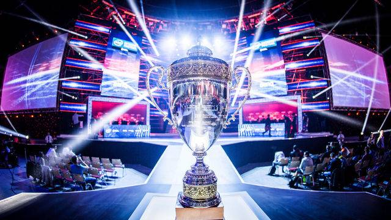
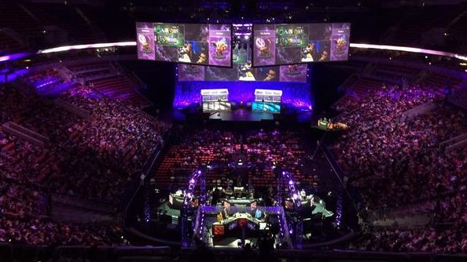

Los deportes electrónicos o también conocido como Esports da nombre a las competiciones de videojuegos, las cuales se han convertido en eventos de gran popularidad.Los Esports son competiciones de videojuegos multijugador,particularmente entre jugadores profesionales. Entre los Esports más destacados se encuentran League of Legends, DOTA 2, Counter Strike Global Offensive(CS:GO), FIFA 18 entre muchos otros.El comienzo de los deportes electrónicos data del año 2000, con las primeras competiciones de videojuegos,empezando con el famoso Street Fighter.
Juego
Tipo de juego
Año de salida
League of Legends
MOBA
2009
Counter Strike:Global Offensive
FPS
2012
DOTA 2
MOBA
2013


Páginas de referencia sobre los deportes electrónicos